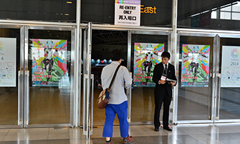
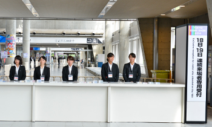

![TOKYO GAME SHOW 2015
Business Day 2015.9.17[Thu]-18[Fri] Public Day 2015.9.19[Sat]-20[Sun] @ Makuhari Messe](../../../en/common/images/maintitle_en.png)

The first visit to TGS -Business Day Version-

※We recommend that you get an idea of the look and feel of Tokyo Game Show 2015 (TGS2015) in advance. Photos from TGS2014 are included to help you form a mental picture. Please note, however, that there will be some differences between TGS2015 and TGS2014, so the photos are for reference purposes only.
Re-entry & Exit
Re-entry
If you have a badge holder with a Business Day pass (Business Day WEB Ticket with QR code) you can re-enter the venue as many times as you want if it is within TGS2015 hours. Please show your Business Day pass at the re-entry entrance.

Exit times
All visitors must leave the venue by 5:00 p.m. without exception.
If you wish to visit Business Day for two days
Please drop by the exclusive counter (second-floor concourse of Halls 1 – 8) upon your visit to the venue on the second Business Day. A re-confirmation will be made to verify that you are the registered individual. Please present the badge holder with the Business Day pass (Business Day WEB Ticket with QR code) that you used on the first Business Day together with your business card and photo ID.

If you have a Lounge Membership (fee charged), you can enter the venue again on the second Business Day if you have the badge holder with the Business Day pass (Business Day WEB Ticket with QR code) that you used on the first Business Day.
If you forget to bring the badge holder with the Business Day pass (Business Day WEB Ticket with QR code) on the second Business Day, please proceed to the exclusive WEB Tickets Printer counter at the venue, provide your name and the name of the company under which you made your advance registration and have your ticket printed out. Please note that you will have to go through the admission reception procedure once more.
Please be aware that the Business Day pass cannot be used by any person other than the registered individual (i.e., transfer or assignment of the pass is prohibited).

2002-2015 CESA / Nikkei Business Publications, Inc. All rights reserved.